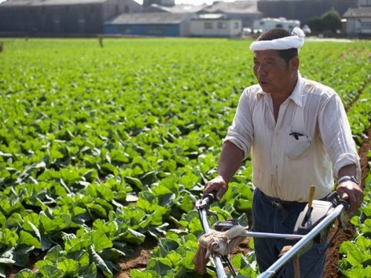

ARTIKEL
Sistem & Teknik Pertanian Modern di Jepang

Selalu banyak hal menarik jika berbicara mengenai negara maju yang satu ini, mulai dari animasi, otomotif, kuliner hingga keindahan alamnya. Tidak hanya itu, Jepang juga merupakan negara yang terkenal akan idustri pangan dan pertaniannya. Kemajuan industri negara tidak terlepas dari campur tangan pemerintah itu sendiri. Tidak heran jika pertanian Jepang begitu maju. Pasalnya, pemerintahan Jepang telah menerapkan empat pilar pada sistem pertaniannya salah satu diantaranya adalah Farm Size Expansion. Sebuah kebijakan pemerintah dalam meningkatkan kepemilikan lahan pertanian untuk setiap keluarga petani dari 4 hektare menjadi 15-20 hektare. Hasil pertanian yang paling tersohor di Jepang adalah beras, buah-buahan, dan sayur-sayuran. Berikut beberapa hal yang membuat pertanian di Jepang begitu maju. Apa saja itu? Yuk disimak.
1. Tingginya perhatian pemerintah di bidang pertanian
Pemerintah Jepang telah mengatur sedemikian rupa masalah tata niaga termasuk tanaman apa yang akan ditanam para petani. Apa yang ditanam telah diatur dan disesuaikan dengan permintaan pasar, tidak ada petani yang menanam sembarang tanaman sehingga mereka tidak akan kebingungan menjual produk pertaniannya.
2. Harga produk pertanian dikontrol pemerintah
Bukan hanya mengatur apa yang harus ditanam, pemerintah Jepang bahkan ikut campur terhadap penetapan harga produk pertanian. Pengaturan tersebut dilakukan oleh pemerintah, kalau di Indonesia mungkin semacam Dinas Pertanian. Pemerintah membeli hasil pertanian para petani kemudian mengatur harga yang layak bagi masyarakat. Meski demikian, adapula pihak swasta yang membeli namun harga beli tetap di atas harga pemerintah jadi tetap menguntungkan petani.
3. Petani diberi hak kepemilikan lahan yang luas
Pemerintah sangat mendukung para petani dengan memberikan lahan yang luas. Jadi para petani tidak hanya memiliki sepetak atau dua petak saja tapi 7 sampai 10 hektar lahan. Dalam pembagian warisan lahan pun sudah ada aturannya, satu keluarga di Jepang akan mewariskan hanya pada satu anak saja yang benar-benar berkeinginan untuk menjadi petani sementara anak lainnya menerima warisan dalam bentuk lain.
4. Teknologi pertanian yang canggih
Para petani mampu menggarap sawahnya dengan lahan yang begitu luas dengan bantuan teknologi. Hampir seluruh proses pertanian dikerjakan oleh mesin canggih, mulai dari membajak, menanam, memupuk hingga memanen.
5. Tingginya etos kerja petani
Jam kerja petani di Jepang layaknya bekerja di kantoran. Satu orang petani biasanya memiliki beberapa karyawan untuk membantu mengelola lahan yang berhektar-hektar itu. Dalam sehari, jam kerja normalnya selama 8 jam. Mereka bekerja dari pukul 02.00 dini hari hingga waktu istirahat yakni pukul 12.00 siang. Bahkan jika dibutuhkan mereka bahkan lembur hingga pukul 17.00. Wah luar biasa para petani Jepang ini. Itulah 5 sistem dan teknik pertanian di Jepang. Tidak heran jika Jepang memiliki hasil pertanian yang unggul dan lebih besar dibandingkan dengan negara lain. Temukan berbagai kebutuhan berkebun Anda disini, mulai dari benih / bibit tanaman, peralatan berkebun, pupuk dan lain-lain.